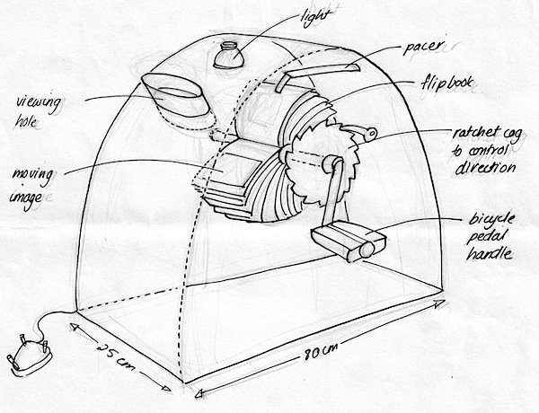

The Inventor
Herman Casler
 Herman Casler (left) was born in Fort Plain, NY in 1867.
Herman Casler (left) was born in Fort Plain, NY in 1867.
He started working as an apprentice to cousin, inventor Charles E. Lipe. He worked from Lipe from 1889 - 1893.
From 1893-1895, Casler worked for General Electric Co. as a draftsman - he designed electric rock drills.
 Herman co-founded KMCD group (right), which became the American Mutoscope and Biograph company.
Herman co-founded KMCD group (right), which became the American Mutoscope and Biograph company.
Casler formed the Marvin & Casler Co. with Harry Marvin, which made a range of products (engines, machines, automatic palm readers, motion picture machines). Soon after, Casler became the sole owner, sold the company in 1919.
He retired in 1926 but remained as a consulting engineer for other businesses even into his retirement.

Inventions
W.K.L. Dickson suggested that Casler create the Mutoscope, which was ready by fall 1894. It was initially a competitor of Edison’s kinetoscope.
Casler developed the Mutagraph, a camera, prototyped by June 1895.
Casler designed the Biograph projector.
In 1900 Casler helped develop a portable hand-cranked camera.
Casler patented the Mutoscope on October 8th, 1901.
Filed his final patent in 1937.
Herman Casler died in 1939. 